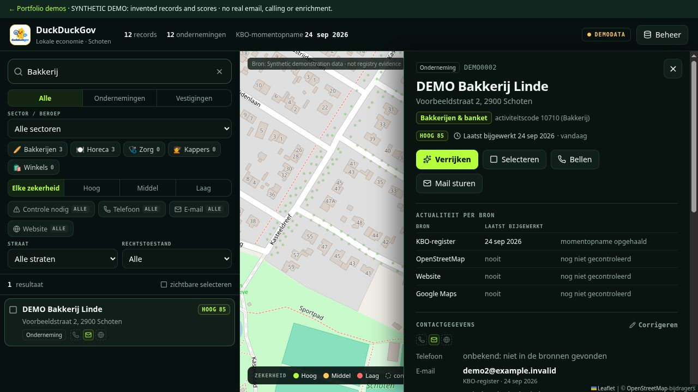
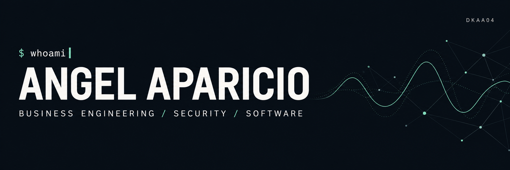
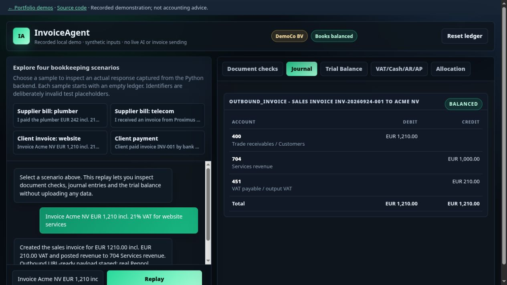

01 / Interactive · synthetic data
DuckDuckGov
Search invented business records, filter the map and inspect why a record needs review. The existing React interface runs entirely in the browser.
Open demo →Source
Two ways to inspect the work without setup. Both use synthetic examples and make their limits explicit. Read the source for the complete applications.

01 / Interactive · synthetic data
Search invented business records, filter the map and inspect why a record needs review. The existing React interface runs entirely in the browser.
Open demo →Source
02 / Recorded backend responses
Choose an example and explore its journal, trial balance and document checks. Responses were captured from the real Python application; each sample starts fresh.
Explore replay →SourceAlso in the portfolio
Code the Sky — vibration-signal classification · 2nd place, 2026 hackathon.
Email & product lookup automation — Python, MySQL and AWS SES.